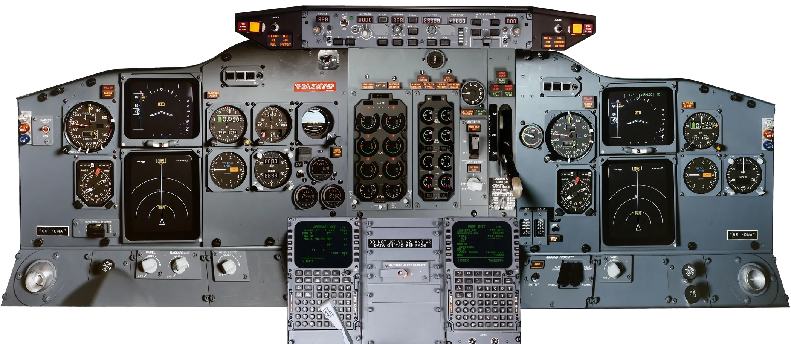
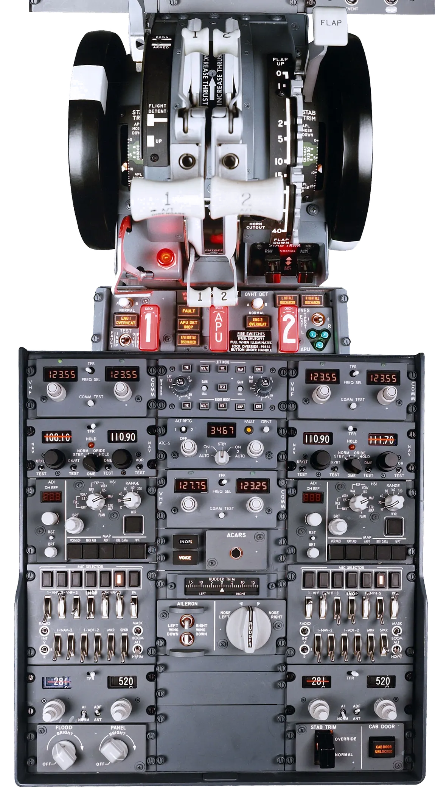

INTERACTIVE COCKPIT EXPLORER
The Classic Flight Deck.
Every panel in one workspace. Select a system, operate mapped cockpit controls and inspect their demo state.
BOEING 737-300 / -400 / -500Visual reference · user-provided cockpit image
COMPLETE FLIGHT DECKThree cockpit sections · select one to zoom in
TAP A CONTROL TO SELECT · TAP AGAIN TO SWITCH01OVERHEAD PANEL

02MAIN INSTRUMENT PANEL

03THROTTLE QUADRANT & PEDESTAL
